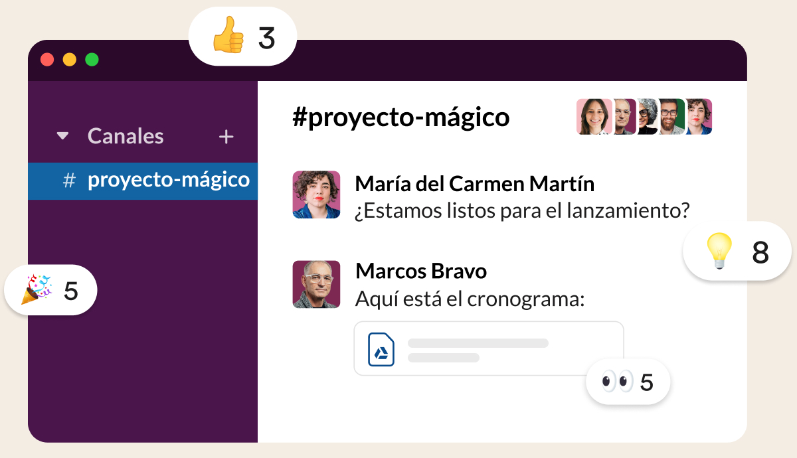

Slack es tu sede digital
Transforma tu manera de trabajar con un único lugar para todo el mundo y todo lo que necesitas para hacer las cosas.



Transforma tu manera de trabajar con un único lugar para todo el mundo y todo lo que necesitas para hacer las cosas.
La clave de la productividad en Slack son los espacios organizados, llamados “canales”, uno diferente para cada proyecto en el que estés trabajando. Al tener a todas las personas, mensajes y archivos relacionados con un tema en un mismo lugar, puedes avanzar mucho más rápido.
¿Qué es un canal?
0:15
0:15
Date la flexibilidad de trabajar cuando, donde y como mejor te venga. Toma el control de las notificaciones, colabora en directo o en el momento que prefieras y encuentra respuestas en las conversaciones de toda la empresa.
Cómo pausar las notificaciones
0:15
Ofrece a todos tus compañeros (de dentro y fuera de tu empresa) una forma más productiva de mantener la sincronización. Responde más rápidamente con emojis, mantén las conversaciones centradas en los canales y simplifica toda tu comunicación en un mismo lugar.
Trabaja con socios externos mediante Slack Connect
0:15
Cómo compartir ideas en un canal
0:15
1
Regístrate
Crea un nuevo espacio de trabajo de Slack en unos instantes. Todos los equipos, sean del tamaño que sean, pueden probarlo de forma gratuita.
2
Invita a tus compañeros de trabajo
Slack es mejor en compañía (no, en serio, resulta un poco decepcionante si se utiliza en solitario) y es muy fácil invitar a tu equipo.
3
Pruébalo
Dirige un proyecto, coordínate con tu equipo o simplemente habla de ello. Slack es un lienzo en blanco para el trabajo en equipo.

Bienvenido al lugar donde trabaja el futuro